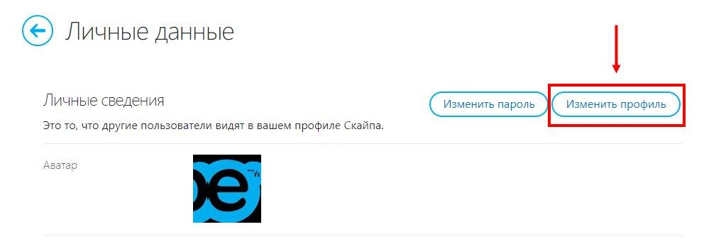
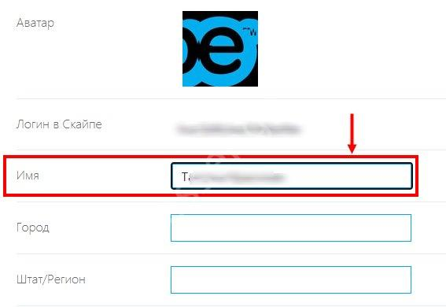
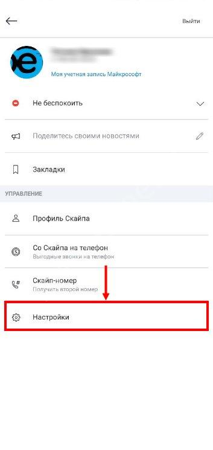
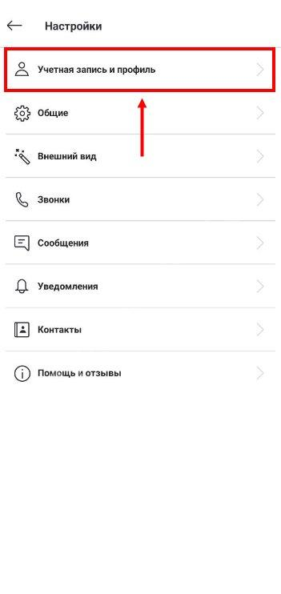
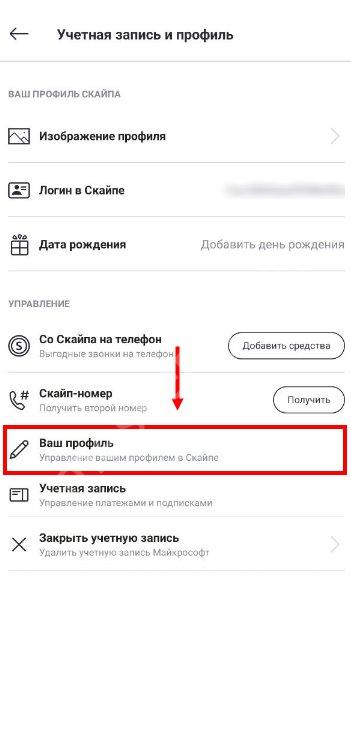
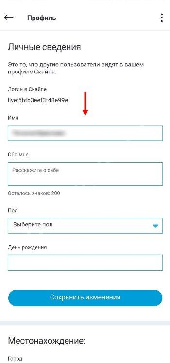

Как изменить имя в Скайпе, которое видят другие пользователи?
Предлагаем пошаговую инструкцию для мобильной и десктопной версий, с которой вы с легкостью справитесь.
Как изменить данные
Мы подробно расскажем, как сменить имя в Скайпе – но сначала отметим, вы можете изменить только личную информацию, отображаемую в профиле. Поменять идентификатор пользователя нельзя, это автоматическое значение, которое присваивается при регистрации. А теперь можно приступать к делу!
На компьютере
Сначала о том, как поменять имя учетной записи в Скайпе, если вы работаете на компьютере:
- Откройте приложение и нажмите на три точки наверху слева;
- Перейдите к пункту «Настройки» через открывшееся меню;
- Найдите на панели слева вкладку «Учетная запись и профиль»;
- В блоке «Управление» ищем строку «Ваш профиль».
Как только вы нажмете на кнопку, будете автоматически перекинуты на веб-страницу – не пугайтесь, это закономерное действие. Некоторые параметры доступны только в браузере, через приложение их открыть нельзя.
Вплотную подходим к ответу на вопрос, как поменять имя пользователя в Скайпе – на открывшейся странице вы видите меню редактирования личных сведений:
- Кликните по кнопке «Изменить профиль» наверху справа; 
- Найдите нужную строку – вы узнаете ее по названию;
- Сотрите старые данные и впишите новые; 
- Жмите на иконку «Сохранить» наверху справа, чтобы внесенные изменения вступили в силу!
Поздравляем, вы смогли разобраться, как в Скайпе изменить имя и фамилию через десктопное приложение! Можете указать реальное ФИО или выдуманное значение – главное, чтобы друзья с легкостью могли идентифицировать вас.
На телефоне
Давайте скажем несколько слов о том, как изменить данные через мобильную версию!
- Откройте приложение;
- Нажмите на ваш аватар наверху – и перейдите к иконке «Настройки»; 
- Открываем раздел «Учетная запись и профиль»; 
- Жмем на кнопку «Ваш профиль». 
Вот и ответ на вопрос, как поменять имя в Скайпе через мобильный телефон – автоматические загрузится меню «Личные данные»:
- Вписываем новое значение в нужную строку; 
- Жмем на кнопку «Сохранить изменения».
Внесенные изменения вступают в силу моментально – ваши собеседники увидят обновление сразу. Вы можете менять данные в любое время, ограничений нет.
Как видите, воспользоваться опцией можно на любом устройстве – вам все равно придется перейти к веб-странице, где находятся нужные параметры. Дерзайте! Если возникла необходимость иначе персонализировать страницу, сделайте это.